Competency 127 and the lab muscle list: thigh, gluteal region and leg on the cadaver, with the nerves and vessels that run with them.
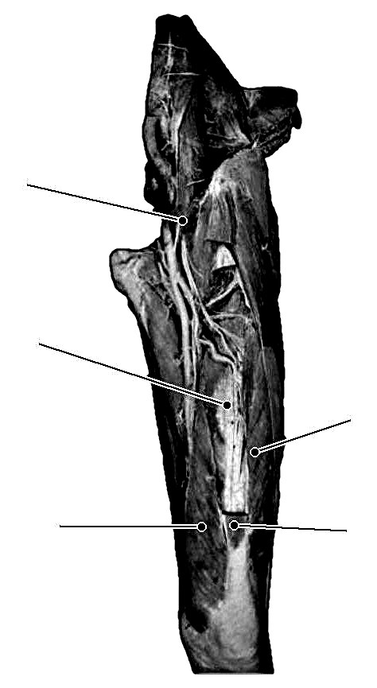
12345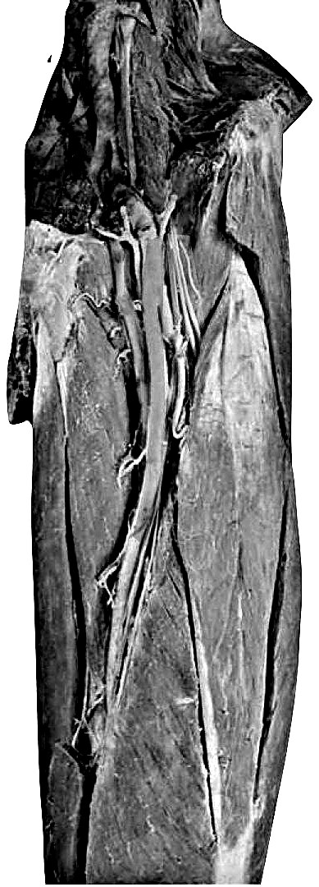
123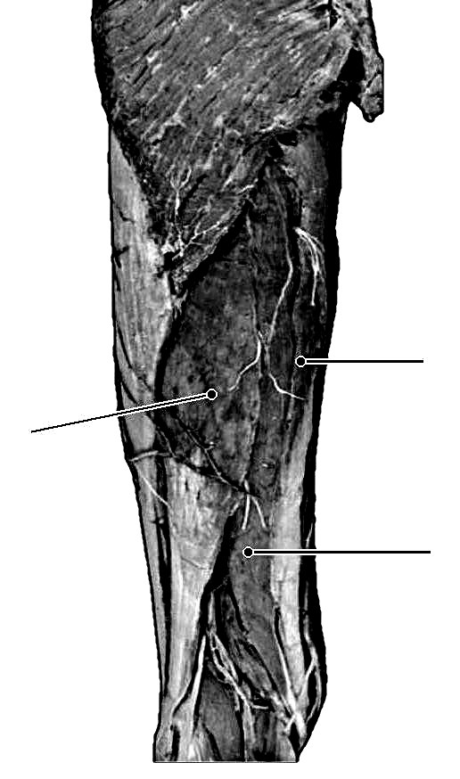
123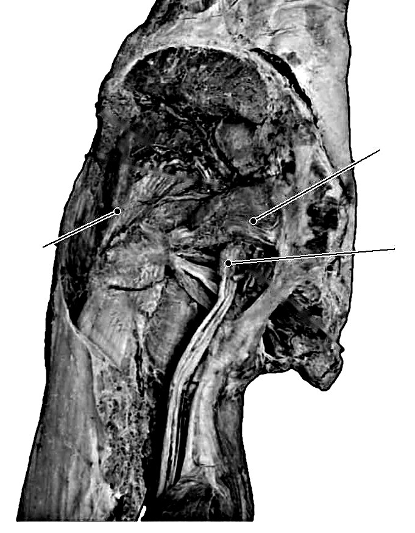
123A. Anterior thigh and the femoral triangle (cadaver) · Competency 127, lab · one card per numbered structure, same lines as the slide. Write the name, then fill each line as we go.
B. Gluteal region and posterior thigh (cadaver) · Competency 127, lab · one card per numbered structure, same lines as the slide. Write the name, then fill each line as we go.
Competency 127 and the lab muscle list: thigh, gluteal region and leg on the cadaver, with the nerves and vessels that run with them.
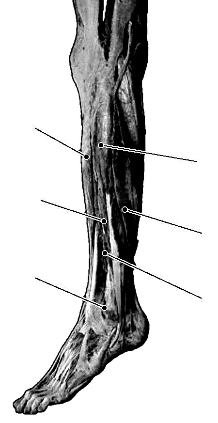
123456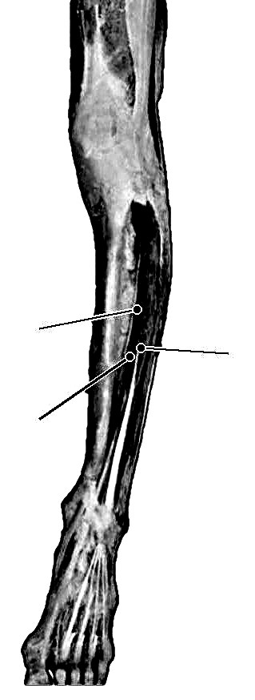
123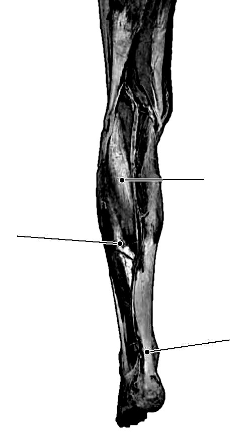
123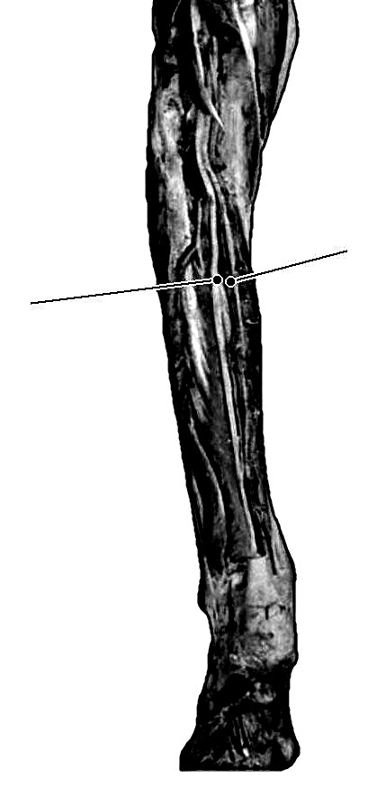
12C. Anterior and lateral leg (cadaver) · Competency 127, lab · one card per numbered structure, same lines as the slide. Write the name, then fill each line as we go.
D. Posterior leg, and the veins (cadaver) · Competency 127, lab · one card per numbered structure, same lines as the slide. Write the name, then fill each line as we go.
Competencies 105 to 108: the route lymph takes, vessel and node structure, primary and secondary organs, disorders.
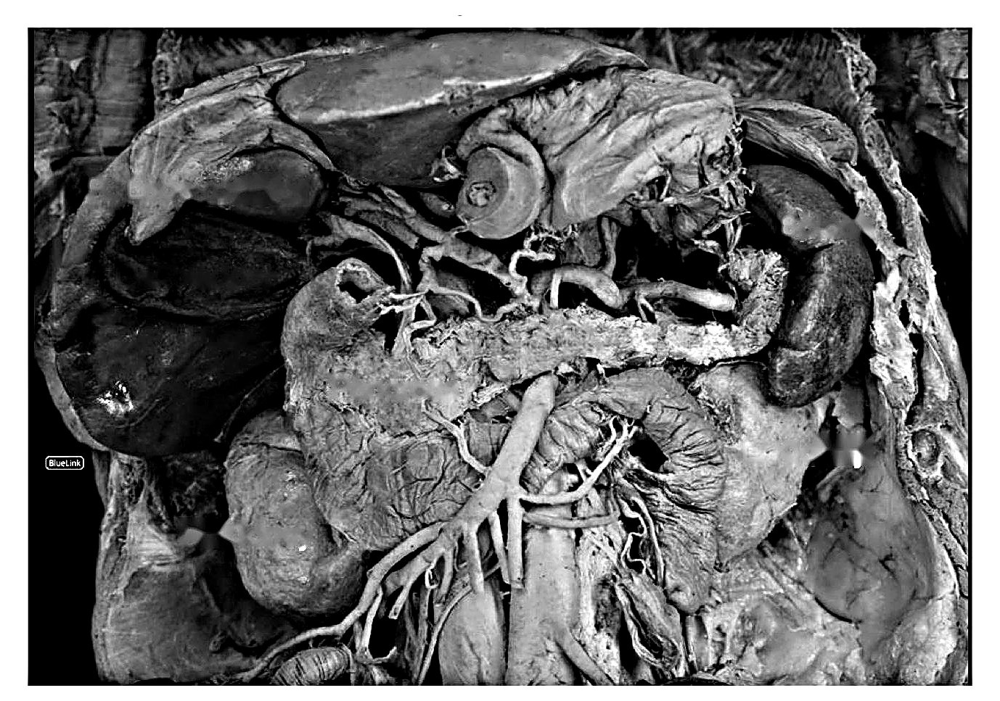
125A. The route lymph takes (draw it) and the spleen (cadaver) · Competency 105, 107 · one card per numbered structure, same lines as the slide. Write the name, then fill each line as we go.
Competencies 105 to 108: the route lymph takes, vessel and node structure, primary and secondary organs, disorders.
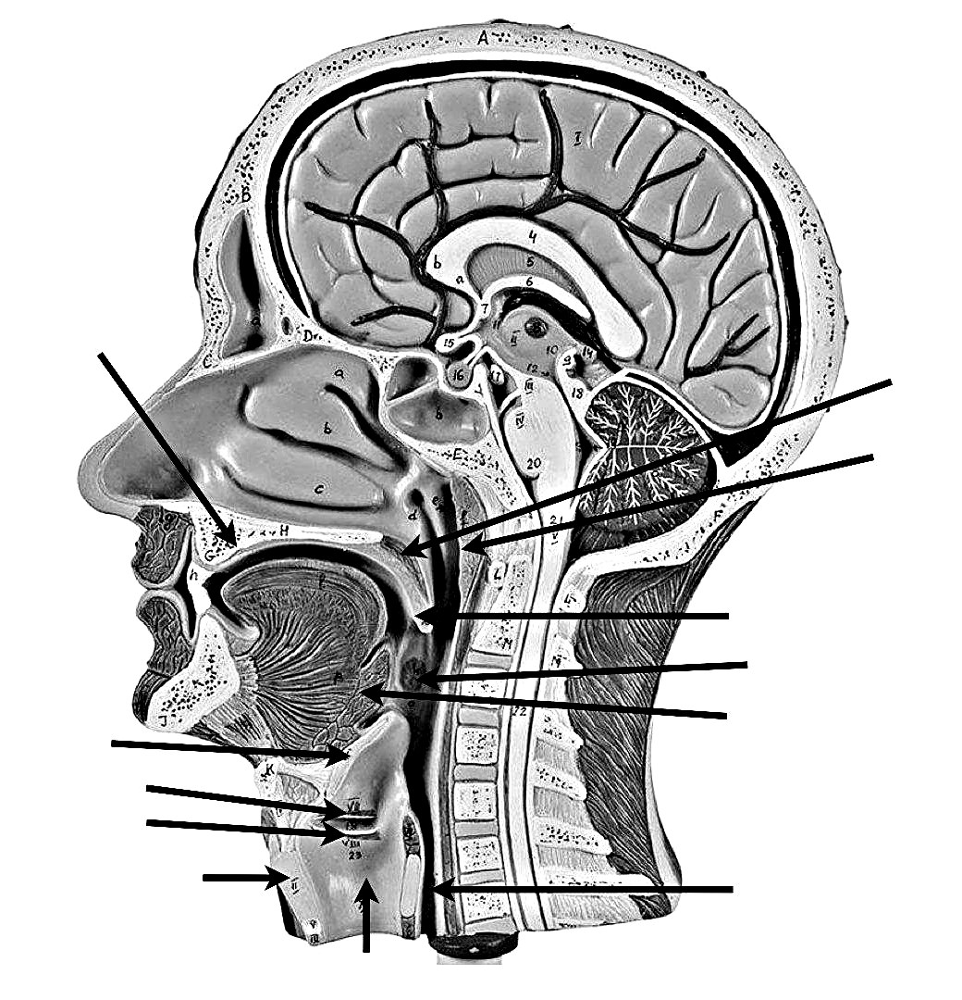
356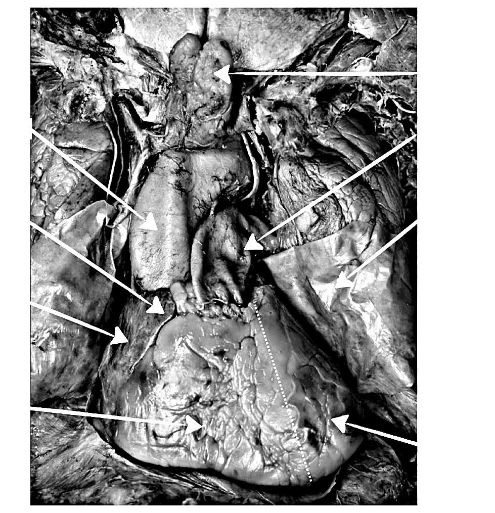
1C. Primary and secondary organs · Competency 107 · one card per numbered structure, same lines as the slide. Write the name, then fill each line as we go.